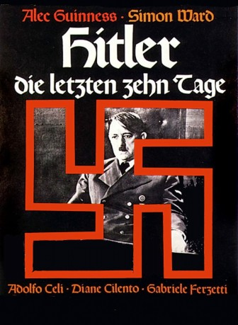

#7947 Hitler - Die letzten zehn Tage
Alternativ: Hitler: The Last Ten Days
 
 IMDB-Wertung: 6.7 / 10
IMDB-Wertung: 6.7 / 10  Metascore: 0
Metascore: 0 
20. April 1945, der 56. Geburtstag Adolf Hitlers: Die Sowjetarmee ist im Begriff, Berlin zu erobern. Die Lage im Führerbunker spitzt sich zu. Doch Hitler denkt nicht an Aufgabe. Er plant für Armeen und Divisionen, die gar nicht mehr existieren. Die letzten 10 Tage seines Lebens haben begonnen und die letzten 18 Tage des dritten Reiches.
Jahr: 1973
Dauer: 105 Minuten
FSK:
Land: England Studio: Schröder MediaTonspuren:
Untertitel:
Auflösung: 1080p (1920x1080) Größe: 9615 MB
Genre: Drama, Krieg, Geschichte, Biographie
Regisseur: Ennio De Concini
Drehbuch: Ivan Moffat
Soundtrack: Mischa Spoliansky
Darsteller:
Datei: X:\1973\Hitler - Die letzten zehn Tage (1973, FSK, 1920x1080).mkv seit 07.01.2018
Festplatte: HD 1971-1979
 Es gibt insgesamt 30 Filme in der Gruppe '1973'
Es gibt insgesamt 30 Filme in der Gruppe '1973'